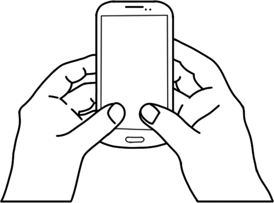
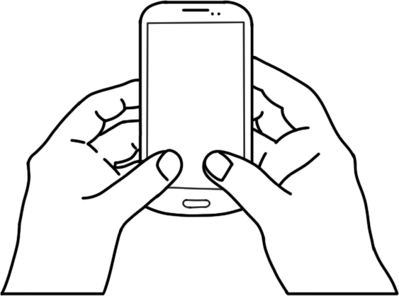
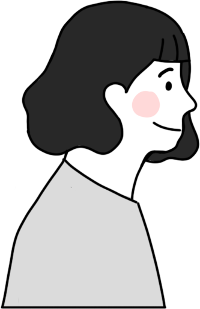

여러분들은 퍼빙이 무엇인지 아시나요?
퍼빙(Phubbing)이란 휴대전화(Phone)와 무시(snubbing)의 합성어입니다. 스마트폰 중독이 일상화가 된 현대사회 속에서 스마트폰을 사용하느라 타인과의 대화에서 소홀해지거나 무시하는 현상을 의미합니다.
여러분들은 퍼빙이 무엇인지 아시나요?
퍼빙(Phubbing)이란 휴대전화(Phone)와 무시(snubbing)의 합성어입니다. 스마트폰 중독이 일상화가 된 현대사회 속에서 스마트폰을 사용하느라 타인과의 대화에서 소홀해지거나 무시하는 현상을 의미합니다.
저희는 이러한 사회적 문제를 개선하고자 스마트폰을 향해 숙였던 고개를 들어 서로의 얼굴을 마주보고 소통하자는 의미의 ‘Look Up(룩업)’을 개발하게 되었습니다.
LOOK UP을 함께 개발한 사람들